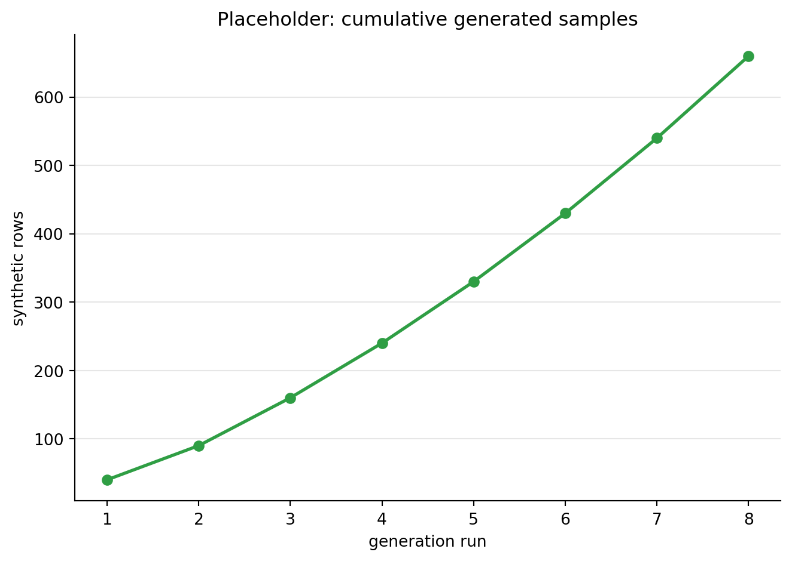

Session 2 · de-code data generation
Democratizing Coding with AI — Tue 6 Oct
Topics
- Why synthetic data matters
- Generate examples from prompts
- Simulations and test cases
- Teaching datasets on demand
- Validate generated distributions
1 Generate a toy dataset from a prompt
1.1 The prompt
In session 1 we analysed a small simulated survey. Here we see how a dataset like that is made: we describe the data we want in words, and an AI model writes the Python code that generates it. The prompt below was given to Gemini — open the Gemini chat to see the answer, or paste the prompt into a chat of your own. The cell only stores the text; it is not run.
prompt = """
Write a complete, reproducible Jupyter notebook Python code cell as code snippet using
numpy, pandas, scipy, and statsmodels that generates and validates a synthetic dataset of
exactly 100 cases saved to komp014-simulated-data-n100.tsv. Generate continuous, normally
distributed latent variables converted via fixed thresholding into five-category ordinal
Likert items (1-5) forming three mean indices:
- one dependent index (DV_INDEX composed of items DV_ITEM1, DV_ITEM2)
- two independent indices (IV_INDEX1 composed of IV1_ITEM1, IV1_ITEM2; IV_INDEX2 composed
of IV2_ITEM1, IV2_ITEM2)
Ensure all item scores are symmetric and bell-shaped, scale alphas are 0.65-0.85,
IV_INDEX1 and IV_INDEX2 have weak positive intercorrelations, and all predictor indices
have moderate positive relationships (r = 0.30-0.50) with DV_INDEX. Also create a
categorical variable:
- an independent categorical variable (IV_CAT_GROUP with 50% "category1" and 50%
"category2" cases), while IV_CAT_GROUP ("category2" vs. "category1") has a moderate
negative relationship with DV_INDEX (Cohen's d = -0.40 to -0.60).
Use a bounded, transparent seed-search loop to select the first seed satisfying these
exact criteria without manually altering observations. Print the selected seed, missing
value count (0), category frequencies, index descriptives (mean, SD, skewness, Cronbach's
alpha), Pearson correlations, a Welch t-test with Cohen's d, and a multiple OLS regression
reporting coefficients, 95% CIs, R^2, and p-values (p < 0.05 for all predictors). Return
only executable Python code with concise comments.
"""1.2 Anatomy of the prompt
The prompt is long, but every part has a job. Read it as a specification:
| Part of the prompt | Example | What it does |
|---|---|---|
| Output contract | “complete, reproducible … code cell”, “numpy, pandas, scipy, and statsmodels”, “Return only executable Python code” | Fixes what comes back: one runnable cell, known libraries, no long explanations to delete. |
| Sample and file | “exactly 100 cases saved to komp014-simulated-data-n100.tsv” | Sets the size of the data and where it ends up. |
| Data-generating model | “normally distributed latent variables converted via fixed thresholding into … Likert items (1-5)” | Says how the numbers arise: a hidden continuous score per person, cut into five answer categories, like a real questionnaire. |
| Variables and roles | “DV_INDEX composed of DV_ITEM1, DV_ITEM2”, “IV_CAT_GROUP with 50% …” | Names every column and says which ones are items, indices, outcome and predictors. |
| Statistical targets | “alphas 0.65-0.85”, “r = 0.30-0.50”, “Cohen’s d = -0.40 to -0.60” | Plants the patterns you want students to find later — with ranges, so the result is realistic rather than perfect. |
| Reproducibility | “bounded, transparent seed-search loop”, “without manually altering observations” | The code tries random seeds in order and keeps the first dataset that meets every target; nobody edits rows by hand. |
| Validation output | “Print the selected seed, … Welch t-test … OLS regression” | Makes the code prove that the data meet the specification. |
The key idea: every number in the prompt becomes a check in the code. If you cannot check a requirement, the AI cannot reliably meet it either.
1.3 Run the generated code
This is the code Gemini returned. Run it in the session notebook in Colab to test it: it searches for a seed, saves komp014-simulated-data-n100.tsv and prints the validation report. The result is a dataset like the one from session 1 — same design, different random draw.
import numpy as np
import pandas as pd
from scipy import stats
import statsmodels.api as sm
def cronbach_alpha(df_items):
k = df_items.shape[1]
item_variances = df_items.var(axis=0, ddof=1).sum()
total_variance = df_items.sum(axis=1).var(ddof=1)
return (k / (k - 1)) * (1 - item_variances / total_variance)
def compute_cohens_d(group2, group1):
n1, n2 = len(group1), len(group2)
s1, s2 = np.std(group1, ddof=1), np.std(group2, ddof=1)
s_pooled = np.sqrt(((n1 - 1) * s1**2 + (n2 - 1) * s2**2) / (n1 + n2 - 2))
return (np.mean(group2) - np.mean(group1)) / s_pooled
target_seed = None
final_df = None
# Search for seed satisfying all criteria
for seed in range(1, 10000):
rng = np.random.default_rng(seed)
# 1. Generate correlated continuous latent variables
# Order: [Latent_DV, Latent_IV1, Latent_IV2]
mean_vec = [0, 0, 0]
cov_matrix = [
[1.00, 0.60, 0.60], # Latent DV target correlations
[0.60, 1.00, 0.25], # Latent IV1 target correlations
[0.60, 0.25, 1.00], # Latent IV2 target correlations
]
latent_indices = rng.multivariate_normal(mean_vec, cov_matrix, size=100)
# 2. Add item noise to latent variables
latent_items = np.column_stack(
[
latent_indices[:, 0] + rng.normal(0, 0.7, 100), # DV_ITEM1
latent_indices[:, 0] + rng.normal(0, 0.7, 100), # DV_ITEM2
latent_indices[:, 1] + rng.normal(0, 0.7, 100), # IV1_ITEM1
latent_indices[:, 1] + rng.normal(0, 0.7, 100), # IV1_ITEM2
latent_indices[:, 2] + rng.normal(0, 0.7, 100), # IV2_ITEM1
latent_indices[:, 2] + rng.normal(0, 0.7, 100), # IV2_ITEM2
]
)
# 3. Categorize into symmetric 5-point Likert items using fixed cutoffs
cutoffs = [-1.2, -0.4, 0.4, 1.2]
likert_items = np.digitize(latent_items, cutoffs) + 1
df = pd.DataFrame(
likert_items,
columns=[
"DV_ITEM1",
"DV_ITEM2",
"IV1_ITEM1",
"IV1_ITEM2",
"IV2_ITEM1",
"IV2_ITEM2",
],
)
# 4. Form Mean Indices
df["DV_INDEX"] = df[["DV_ITEM1", "DV_ITEM2"]].mean(axis=1)
df["IV_INDEX1"] = df[["IV1_ITEM1", "IV1_ITEM2"]].mean(axis=1)
df["IV_INDEX2"] = df[["IV2_ITEM1", "IV2_ITEM2"]].mean(axis=1)
# 5. Create balanced categorical variable (50% category1, 50% category2)
# Higher DV values get slightly higher probability for category1 to enforce negative effect for category2
dv_rank = stats.rankdata(-df["DV_INDEX"])
cat_prob = dv_rank / 100.0
group2_idx = rng.choice(100, size=50, replace=False, p=cat_prob / cat_prob.sum())
cat_arr = np.array(["category1"] * 100)
cat_arr[group2_idx] = "category2"
df["IV_CAT_GROUP"] = cat_arr
# 6. Validate Criteria
alpha_dv = cronbach_alpha(df[["DV_ITEM1", "DV_ITEM2"]])
alpha_iv1 = cronbach_alpha(df[["IV1_ITEM1", "IV1_ITEM2"]])
alpha_iv2 = cronbach_alpha(df[["IV2_ITEM1", "IV2_ITEM2"]])
# Cronbach's Alphas between 0.65 and 0.85
if not (
0.65 <= alpha_dv <= 0.85
and 0.65 <= alpha_iv1 <= 0.85
and 0.65 <= alpha_iv2 <= 0.85
):
continue
# Correlations
r_iv1_iv2 = df["IV_INDEX1"].corr(df["IV_INDEX2"])
r_iv1_dv = df["IV_INDEX1"].corr(df["DV_INDEX"])
r_iv2_dv = df["IV_INDEX2"].corr(df["DV_INDEX"])
if not (0.10 <= r_iv1_iv2 <= 0.30): # Weak positive intercorrelation
continue
if not (0.30 <= r_iv1_dv <= 0.50 and 0.30 <= r_iv2_dv <= 0.50): # Moderate positive with DV
continue
# Categorical Group Cohen's d
g1 = df[df["IV_CAT_GROUP"] == "category1"]["DV_INDEX"]
g2 = df[df["IV_CAT_GROUP"] == "category2"]["DV_INDEX"]
d_val = compute_cohens_d(g2, g1)
if not (-0.60 <= d_val <= -0.40):
continue
# Skewness check for items (-0.5 to 0.5 for symmetry)
item_skews = [stats.skew(df[col]) for col in df.columns[:6]]
if any(abs(s) > 0.5 for s in item_skews):
continue
# OLS Regression validation (p-values < 0.05 for all predictors)
df["IV_CAT_DUMMY"] = (df["IV_CAT_GROUP"] == "category2").astype(int)
X = sm.add_constant(df[["IV_INDEX1", "IV_INDEX2", "IV_CAT_DUMMY"]])
y = df["DV_INDEX"]
model = sm.OLS(y, X).fit()
if any(p >= 0.05 for p in model.pvalues):
continue
# If all criteria are met:
target_seed = seed
final_df = df.drop(columns=["IV_CAT_DUMMY"])
break
# Save Dataset
final_df.to_csv("komp014-simulated-data-n100.tsv", sep="\t", index=False)
# Print Validation Results
print(f"Selected Seed: {target_seed}")
print(f"Missing Value Count: {final_df.isnull().sum().sum()}")
print("\n--- Category Frequencies ---")
print(final_df["IV_CAT_GROUP"].value_counts())
print("\n--- Index Descriptives & Reliability ---")
indices = ["DV_INDEX", "IV_INDEX1", "IV_INDEX2"]
items_map = {
"DV_INDEX": ["DV_ITEM1", "DV_ITEM2"],
"IV_INDEX1": ["IV1_ITEM1", "IV1_ITEM2"],
"IV_INDEX2": ["IV2_ITEM1", "IV2_ITEM2"],
}
for idx in indices:
m = final_df[idx].mean()
sd = final_df[idx].std()
sk = stats.skew(final_df[idx])
a = cronbach_alpha(final_df[items_map[idx]])
print(f"{idx} -> Mean: {m:.3f}, SD: {sd:.3f}, Skewness: {sk:.3f}, Cronbach's Alpha: {a:.3f}")
print("\n--- Pearson Correlations ---")
corr_matrix = final_df[["DV_INDEX", "IV_INDEX1", "IV_INDEX2"]].corr()
print(corr_matrix.round(3))
print("\n--- Welch t-test & Cohen's d ---")
g1_dv = final_df[final_df["IV_CAT_GROUP"] == "category1"]["DV_INDEX"]
g2_dv = final_df[final_df["IV_CAT_GROUP"] == "category2"]["DV_INDEX"]
t_stat, p_val = stats.ttest_ind(g2_dv, g1_dv, equal_var=False)
d_stat = compute_cohens_d(g2_dv, g1_dv)
print(f"Welch t-statistic: {t_stat:.3f}, p-value: {p_val:.4f}, Cohen's d: {d_stat:.3f}")
print("\n--- Multiple OLS Regression ---")
X_final = sm.add_constant(
pd.DataFrame(
{
"IV_INDEX1": final_df["IV_INDEX1"],
"IV_INDEX2": final_df["IV_INDEX2"],
"IV_CAT_GROUP[category2]": (final_df["IV_CAT_GROUP"] == "category2").astype(int),
}
)
)
ols_res = sm.OLS(final_df["DV_INDEX"], X_final).fit()
results_df = pd.DataFrame(
{
"Coef": ols_res.params,
"95% CI Lower": ols_res.conf_int()[0],
"95% CI Upper": ols_res.conf_int()[1],
"p-value": ols_res.pvalues,
}
)
print(results_df.round(4))
print(f"\nR-squared: {ols_res.rsquared:.4f}")Selected Seed: 122
Missing Value Count: 0
--- Category Frequencies ---
IV_CAT_GROUP
category2 50
category1 50
Name: count, dtype: int64
--- Index Descriptives & Reliability ---
DV_INDEX -> Mean: 3.155, SD: 1.232, Skewness: -0.230, Cronbach's Alpha: 0.803
IV_INDEX1 -> Mean: 3.010, SD: 1.159, Skewness: 0.113, Cronbach's Alpha: 0.693
IV_INDEX2 -> Mean: 2.925, SD: 1.175, Skewness: 0.087, Cronbach's Alpha: 0.764
--- Pearson Correlations ---
DV_INDEX IV_INDEX1 IV_INDEX2
DV_INDEX 1.000 0.391 0.43
IV_INDEX1 0.391 1.000 0.14
IV_INDEX2 0.430 0.140 1.00
--- Welch t-test & Cohen's d ---
Welch t-statistic: -2.994, p-value: 0.0035, Cohen's d: -0.599
--- Multiple OLS Regression ---
Coef 95% CI Lower 95% CI Upper p-value
const 1.2808 0.5344 2.0272 0.0010
IV_INDEX1 0.3717 0.1972 0.5462 0.0001
IV_INDEX2 0.3630 0.1892 0.5368 0.0001
IV_CAT_GROUP[category2] -0.6125 -1.0151 -0.2100 0.0032
R-squared: 0.35802 Make it realistic: a TPB survey experiment
2.1 Background
Names like IV1_ITEM1 are fine for practice, but real studies measure real concepts. Our realistic example asks: what makes children aged 10–13 intend to start learning a musical instrument? It uses the Theory of Planned Behavior (TPB), which says that intention depends on three judgments:
- Attitude (ATT): would learning an instrument be fun, valuable, good for me?
- Subjective norm (SN): would my parents, friends and teacher approve?
- Perceived behavioral control (PBC): am I able to — do I have time and an instrument?
Each is measured with three 1–5 agree/disagree statements, and so is the outcome, behavioral intention (BI) to start learning. The study also contains a small experiment: half the children read a short positive testimonial from another child who started an instrument (treatment), the other half read nothing like it (control). Age group, grade and gender describe the sample. The records are synthetic teaching data, not answers from real children.
2.2 Update the prompt
Instead of writing a new prompt from scratch, we ask the model to revise the previous one. Send this in the same Gemini chat, so it can reuse the code it already wrote.
update_prompt = """
Rewrite the previous code so that it generates a realistic synthetic dataset for a
Theory of Planned Behavior (TPB) survey experiment instead of the generic one. Keep the
same approach (normal latent scores, fixed thresholds into 1-5 Likert items, mean
indices, bounded seed search, no manual edits, printed validation), but change:
Sample: exactly 100 synthetic children aged 10-13 in Grades 4-6.
Background variables:
- age_group: "10 years", "11 years", "12 years", "13 years" (about 26%, 32%, 32%, 10%)
- grade_level: "Grade 4", "Grade 5", "Grade 6", realistically dependent on age
- gender: about 46% "Girl", 50% "Boy", 2% "Non-binary", 2% "Prefer not to say"
- experimental_condition: exactly 50 "control" and 50 "treatment", randomly assigned
and independent of everything measured before it
Four constructs, three 1-5 Likert items each (1 = strongly disagree, 5 = strongly agree):
- Attitude: att_fun_exciting, att_valuable_use_of_time, att_feel_good_about_self
- Subjective norm: sn_parent_guardian_approval, sn_friend_approval, sn_teacher_encouragement
- Perceived behavioral control: pbc_confident_can_learn, pbc_enough_spare_time,
pbc_instrument_access
- Behavioral intention: bi_plan_next_6_months, bi_try_best_to_learn_soon,
bi_want_to_start_school_year
Indices ATT_index, SN_index, PBC_index, BI_index are the means of their three items.
Targets: symmetric, bell-shaped items; Cronbach's alpha 0.65-0.85 for every scale;
weak positive intercorrelations among ATT, SN and PBC (r = 0.05-0.30); each of them
correlates r = 0.25-0.40 with BI; treatment raises BI with Cohen's d = 0.40-0.60;
no missing values.
Validation: print the selected seed, frequencies of the four background variables,
index descriptives (mean, SD, skewness, alpha), correlations with BI, a Welch t-test
with Cohen's d for treatment vs control, and a hierarchical OLS regression
(Model 1: ATT + SN + PBC; Model 2: adds treatment) with R^2, delta R^2, coefficients,
95% CIs and p-values (p < 0.05 for all predictors in Model 2).
Save the dataset to csv/komp014-tpb-exp-n100.tsv (create the csv folder if needed). Return
only executable Python code with concise comments.
"""2.3 The generated code
A version of the code the model returns. It follows the same pattern as before: a function that generates one candidate dataset from a seed, a function that checks every target from the prompt, and a loop that keeps the first seed that passes.
from pathlib import Path
import numpy as np
import pandas as pd
from scipy import stats
import statsmodels.formula.api as smf
N = 100
ITEMS = {
"ATT": ["att_fun_exciting", "att_valuable_use_of_time", "att_feel_good_about_self"],
"SN": ["sn_parent_guardian_approval", "sn_friend_approval", "sn_teacher_encouragement"],
"PBC": ["pbc_confident_can_learn", "pbc_enough_spare_time", "pbc_instrument_access"],
"BI": ["bi_plan_next_6_months", "bi_try_best_to_learn_soon", "bi_want_to_start_school_year"],
}
CUTOFFS = [-1.3, -0.45, 0.45, 1.3] # latent score -> Likert 1-5
def cronbach_alpha(items):
k = items.shape[1]
return k / (k - 1) * (1 - items.var(ddof=1).sum() / items.sum(axis=1).var(ddof=1))
def cohens_d(a, b):
pooled = np.sqrt(((len(a) - 1) * a.var(ddof=1) + (len(b) - 1) * b.var(ddof=1))
/ (len(a) + len(b) - 2))
return (a.mean() - b.mean()) / pooled
def generate(seed):
rng = np.random.default_rng(seed)
# Background variables; grade depends on age
age = rng.choice(["10 years", "11 years", "12 years", "13 years"], N, p=[.26, .32, .32, .10])
grade_given_age = {"10 years": [.75, .25, 0], "11 years": [.15, .70, .15],
"12 years": [0, .25, .75], "13 years": [0, 0, 1]}
grade = [rng.choice(["Grade 4", "Grade 5", "Grade 6"], p=grade_given_age[a]) for a in age]
gender = rng.choice(["Girl", "Boy", "Non-binary", "Prefer not to say"], N,
p=[.46, .50, .02, .02])
condition = rng.permutation(["control"] * 50 + ["treatment"] * 50) # random assignment
treat = (condition == "treatment").astype(float)
# Latent TPB predictors with weak intercorrelations; BI depends on all four
pred = rng.multivariate_normal([0, 0, 0], [[1, .2, .2], [.2, 1, .2], [.2, .2, 1]], N)
bi = pred @ [0.28, 0.28, 0.28] + 0.45 * (treat - 0.5) + rng.normal(0, 0.75, N)
latent = {"ATT": pred[:, 0], "SN": pred[:, 1], "PBC": pred[:, 2], "BI": bi / bi.std()}
df = pd.DataFrame({"age_group": age, "grade_level": grade, "gender": gender,
"experimental_condition": condition})
# Items = latent score + item noise, cut into five answer categories
for construct, names in ITEMS.items():
for name in names:
df[name] = np.digitize(latent[construct] + rng.normal(0, 0.75, N), CUTOFFS) + 1
for construct, names in ITEMS.items():
df[f"{construct}_index"] = df[names].mean(axis=1)
return df
def meets_targets(df):
alphas = [cronbach_alpha(df[names]) for names in ITEMS.values()]
r_bi = [df[f"{c}_index"].corr(df["BI_index"]) for c in ["ATT", "SN", "PBC"]]
r_pred = df[["ATT_index", "SN_index", "PBC_index"]].corr().values[np.triu_indices(3, 1)]
d = cohens_d(df.loc[df.experimental_condition == "treatment", "BI_index"],
df.loc[df.experimental_condition == "control", "BI_index"])
skews = [stats.skew(df[n]) for names in ITEMS.values() for n in names]
model2 = smf.ols("BI_index ~ ATT_index + SN_index + PBC_index"
" + C(experimental_condition)", df).fit()
return (all(.65 <= a <= .85 for a in alphas)
and all(.25 <= r <= .40 for r in r_bi)
and all(.05 <= r <= .30 for r in r_pred)
and .40 <= d <= .60
and all(abs(s) <= .5 for s in skews)
and (model2.pvalues.iloc[1:] < .05).all())
# Bounded, transparent seed search: keep the first dataset that meets every target
for seed in range(1, 5001):
df = generate(seed)
if meets_targets(df):
break
else:
raise RuntimeError("No seed met the targets; widen the ranges in the prompt.")
Path("csv").mkdir(exist_ok=True)
df.to_csv("csv/komp014-tpb-exp-n100.tsv", sep="\t", index=False)
print(f"Selected seed: {seed} cases: {len(df)} missing values: {df.isna().sum().sum()}")
print("\n--- Frequencies ---")
for col in ["age_group", "grade_level", "gender", "experimental_condition"]:
print(df[col].value_counts().sort_index().to_string(), "\n")
print("--- Index descriptives & reliability ---")
for construct, names in ITEMS.items():
s = df[f"{construct}_index"]
print(f"{construct}_index mean {s.mean():.2f} SD {s.std():.2f} "
f"skew {stats.skew(s):.2f} alpha {cronbach_alpha(df[names]):.2f}")
print("\n--- Pearson correlations ---")
print(df[["ATT_index", "SN_index", "PBC_index", "BI_index"]].corr().round(2))
print("\n--- Treatment vs control (BI) ---")
treated = df.loc[df.experimental_condition == "treatment", "BI_index"]
control = df.loc[df.experimental_condition == "control", "BI_index"]
t = stats.ttest_ind(treated, control, equal_var=False)
print(f"Welch t = {t.statistic:.2f}, p = {t.pvalue:.4f}, Cohen's d = {cohens_d(treated, control):.2f}")
print("\n--- Hierarchical OLS regression of BI ---")
model1 = smf.ols("BI_index ~ ATT_index + SN_index + PBC_index", df).fit()
model2 = smf.ols("BI_index ~ ATT_index + SN_index + PBC_index"
" + C(experimental_condition)", df).fit()
print(f"Model 1 R^2 = {model1.rsquared:.3f} Model 2 R^2 = {model2.rsquared:.3f} "
f"delta R^2 = {model2.rsquared - model1.rsquared:.3f}")
coefs = pd.concat([model2.params, model2.conf_int(), model2.pvalues], axis=1)
coefs.columns = ["coef", "95% CI lower", "95% CI upper", "p"]
print(coefs.round(4))Selected seed: 207 cases: 100 missing values: 0
--- Frequencies ---
age_group
10 years 20
11 years 37
12 years 31
13 years 12
grade_level
Grade 4 21
Grade 5 38
Grade 6 41
gender
Boy 53
Girl 43
Non-binary 3
Prefer not to say 1
experimental_condition
control 50
treatment 50
--- Index descriptives & reliability ---
ATT_index mean 2.75 SD 1.00 skew 0.27 alpha 0.77
SN_index mean 3.11 SD 1.13 skew -0.24 alpha 0.83
PBC_index mean 2.97 SD 1.07 skew 0.01 alpha 0.80
BI_index mean 2.96 SD 1.13 skew 0.00 alpha 0.83
--- Pearson correlations ---
ATT_index SN_index PBC_index BI_index
ATT_index 1.00 0.15 0.20 0.38
SN_index 0.15 1.00 0.20 0.39
PBC_index 0.20 0.20 1.00 0.35
BI_index 0.38 0.39 0.35 1.00
--- Treatment vs control (BI) ---
Welch t = 2.51, p = 0.0138, Cohen's d = 0.50
--- Hierarchical OLS regression of BI ---
Model 1 R^2 = 0.306 Model 2 R^2 = 0.376 delta R^2 = 0.071
coef 95% CI lower 95% CI upper \
Intercept 0.0566 -0.7383 0.8516
C(experimental_condition)[T.treatment] 0.6003 0.2370 0.9636
ATT_index 0.3281 0.1404 0.5158
SN_index 0.3112 0.1448 0.4777
PBC_index 0.2454 0.0681 0.4227
p
Intercept 0.8878
C(experimental_condition)[T.treatment] 0.0015
ATT_index 0.0008
SN_index 0.0003
PBC_index 0.0072 2.4 Your own dataset
Now make a dataset about something you care about. Change the prompt, not the code: describe your study, and let the model rewrite the generator. Decide on:
- Topic and unit: what is the study about, and what is one row (a student, a post, a city)?
- Outcome: one variable you want to explain, and how it is measured.
- Predictors: two or three variables you think matter, each with an expected direction (positive/negative) and strength (weak/moderate).
- Background variables: a few categories with realistic proportions.
- Scales (optional): concepts measured with three 1–5 Likert items each.
- Details: number of cases (100 is plenty), effect sizes (|r| around .20–.40 looks realistic), no missing values, and a file name.
Fill in the brackets below and send it in the same Gemini chat:
my_prompt = """
Rewrite the previous code for a new synthetic dataset. Keep the same approach (latent
scores, Likert thresholds, mean indices, bounded seed search, printed validation).
Study: [one sentence about the topic]. One row is [one ...]. Generate [100] cases.
Outcome: [variable_name] - [what it measures], [type and range].
Predictors:
- [predictor_1] - [meaning], [type/range], [positive/negative], [weak/moderate] effect
- [predictor_2] - [meaning], [type/range], [positive/negative], [weak/moderate] effect
Background variables: [name: category A __%, category B __%]
Scales (optional): [construct]: items [item_1, item_2, item_3], index [construct_index]
Effect sizes: [for example |r| = .20-.40]. No missing values.
Save to csv/[dataset-name].tsv and print the seed, frequencies, descriptives,
correlations and one multiple OLS regression with all predictors.
Return only executable Python code with concise comments.
"""Paste the code you get back into the empty cell below and run it. Does the validation output match what you asked for?
# paste the code Gemini wrote for your dataset here3 Persona engineering
3.1 From numbers to respondents
Sections 1 and 2 generate data from a statistical model: we decide the effects, and the code draws rows that contain them. There is another way to use AI for synthetic data: ask a language model to play a person — a persona — and let it answer the questionnaire the way that person might. This is called persona engineering, and companies already use it to test products, prices and messages on “synthetic respondents” before asking real people.
The answers then come from the model’s knowledge about people, not from targets we set. That makes them more interesting — and much harder to trust.
3.2 Key concepts
- Personas are forecasts, not people. Like a weather forecast, a persona can be accurate within a range of questions and quietly wrong outside it — while still sounding fluent and convincing.
- Ground the persona and the study. Anything you leave out of the prompt, the model invents: who the person is, where they are, what the study is about. If a human participant would see it, it belongs in the prompt.
- Order and framing matter. Models can react to the position of an answer option rather than its content. Test a persona by reordering, rewording and challenging it.
- Attitudes work better than actions. Models learned from what people say, so they predict stated attitudes and intentions better than actual behaviour. TPB items are attitudes and intentions — a good fit.
- Right average, wrong shape. Synthetic answers often cluster in the middle: the mean looks right, but the disagreement and the subgroups are gone. Compare whole distributions, not just means.
- More samples are not more evidence. Asking a model a thousand times tells you more about the model, not about people. You cannot buy statistical significance with tokens.
- Validate against real people. Even humans only agree with themselves about 80% of the time when they answer the same survey twice. That is the ceiling a persona is measured against.
3.3 A persona prompt
This prompt grounds one persona from the TPB study, describes the study situation, and asks for a short answer in the person’s own words before each rating — models are better at writing than at picking numbers. The cell only stores the text; paste it into Gemini.
persona_prompt = """
You are taking part in a research study as a survey respondent. Stay in role and answer
as this person would, not as an AI assistant.
Who you are: Maja, 11 years old, in Grade 5. You live with your parents and a younger
brother, like drawing and football, and have never played an instrument. A friend
recently started guitar lessons, and there is an old keyboard at home.
The study: you fill in a short questionnaire on a tablet during class. First you read
this text from another child:
"I started playing the violin last year. It was hard at first, but now I can play songs
with my friends and I really want to keep going."
Then you answer the statements below.
For each statement, first write one short sentence in your own words about how you feel,
then give a number: 1 = strongly disagree, 2 = disagree, 3 = neither agree nor disagree,
4 = agree, 5 = strongly agree.
1. Learning an instrument would be fun and exciting.
2. My parents or guardians would approve of me learning an instrument.
3. I have enough spare time to learn an instrument.
4. I plan to start learning an instrument in the next six months.
"""Then test how durable the answers are. Send this follow-up in the same chat, and in a new chat paste the persona prompt again with the statements in reverse order. Do the ratings hold?
durability_prompt = """
Your teacher says that most children in your class thought the text about the violin was
boring. Answer statement 4 again, first in your own words, then with a number from 1 to 5.
"""Finally, compare with section 2: if you asked for 100 different children, would their answers have the same distributions as the generated TPB data? What would you need from real children to find out?